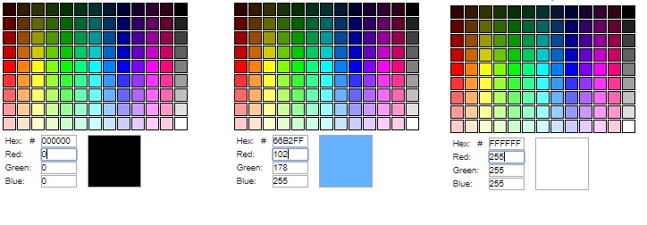
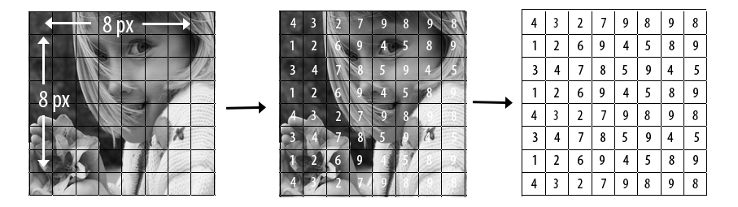
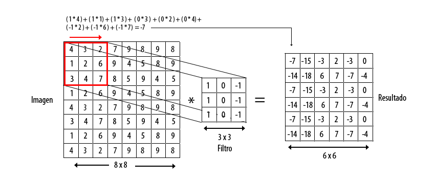
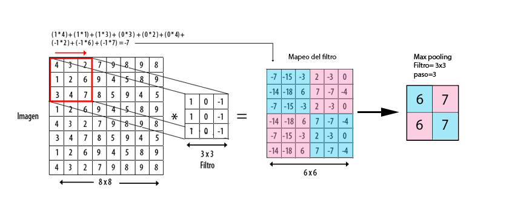

Introducción
El desarrollo de las redes neuronales ha generado grandes avances en el campo de visión por computadora de hecho
es interesante ver que a diferencia de otras áreas de las matemáticas y ciencias de la computación que se han centrado más
que nada en la creación y modelado de objetos 3D, Las redes neuronales convolucionales han resultado ser bastante practicas, ya que no se trata solamente del
acto de observar, sino que al igual que los humanos el acto de observar pasa a ser una actividad secundaria, podría decirse
que la visión es utilizada en humanos y computadoras como una fuente de información bastante valiosa para poder realizar
una actividad primaria.
Redes neuronales convolucionales
De aquí pal' real
- Aprendizaje supervisado
- Regresión lineal
"Siempre he pensado que pensado que un ejemplo es la mejor forma para explicar un tema" (Nunca lo había pensado en mi vida pero queda genial y hasta suena a cierto). Así que me he armado un ejemplo
con el que van a poder comprender el tema y les va a encantar tanto que desearan hacer sus propias redes neuronales en la madrugada
todos frustrados sin saber por qué no les sale, como le pasa a un amigo que obviamente no soy yo.
Tomaré de ejemplo una imagen sencilla, la foto de una niña a la que he llamado la pequeña Lupe. Con la imagen de la Lupe voy a explicar todo el rollo de la manera más sencilla que pueda, más que nada me interesa ilustrar todo el procesamiento de la imagen.
Antes de pasar a la imagen de la Lupe les voy a bombardear el cerebro con información que cura:
Generalmente las imágenes a color que ustedes ven en las computadoras están compuestas por 3 canales : rojo, verde y azul (RGB), La imagen de la Lupe va a estar simplificada, sera una imagen en blanco y negro que equivale solamente a 1 canal.
Hago esto con la finalidad de disminuir el número de operaciones en nuestro ejemplo y la complejidad de la explicación.
¿Comó ven las computadoras?
Debo aclarar dos cosas: primero, a pesar de que se cree que los ojos son los que realizan casi todo el trabajo en realidad es el cerebro el que se encarga de procesar la información que se recibe a través de los azules (⊙_☉) y segundo obviamente una computadora no va a ver las imágenes tal como un humano, Es decir las computadoras al no tener la forma de procesar la información visual como los humanos estas interpretan las imágenes de forma diferente, podría decirse que para ver utilizan sensores del mundo real lo más común sería una cámara, aunque pueden considerarse parecidas al ojo humano no captan la información como tal, aun así ha resultado ser más que suficiente en muchas áreas, como en el caso de las redes neuronales. En el mundo digital lo que se interpreta de una imagen en realidad son sus píxeles, los pixeles conforman la imagen y pueden ser analizados uno por uno si es necesario y dependiendo del análisis puede llegar a implicar un gran poder de procesamiento en el caso de las imágenes de alta definición, ya que están conformadas por muchos más píxeles.Cada píxel en la pantalla tiene un valor de intensidad de hecho ya sea el dibujo de una línea o un punto hasta la fotografía de un paisaje está conformado de esa manera, pero la computadora no ve eso, más bien trabaja con las intensidades de los píxeles que van desde 0 a 255, donde un valor de (rojo= 0, verde=0, azul=0) seria para nosotros ver el color negro, (rojo= 102, verde=178, azul=255) sería un color azul y (rojo= 255, verde=255, azul=255)sería el color blanco. Ósea una mezcla como en las acuarelas.

Procesamiento
Al mismo tiempo que les muestro el proceso de convolucion les voy a explicar como ve una imagen la computadora y no es que sea yo un super genio es que en realidad no es opcional, les tengo que explicar como lo hace para que comprendan el proceso de convolucion. tomare como ejemplo la imagen de la pequeña lupe, en la que vamos a hacer de cuenta lo siquiente: vamos a suponer que la imagen de la pequeña lupe esta conformada por 8 px a lo largo y 8 a lo alto, es decir es unaimagen de 8px por 8px de un solo canal (osea que es blanco y negro).
como podemos ver en la imagen de la pequeña lupe se ha trazado una cuadricula cuya funcion es representar cada uno de los pixeles de la imagen (8x8) en el centro podemos ver una transicion, es la misma imagen de la lupe pero ahora con unos numeros extraños muy a lo codigo davinci que en realidad es el valor de intensidad de cada pixel que conforma la imagen y por ultimo vemos una matriz solo de numeros que representa la forma en la que la computadora ve las imagenes, como una matriz de numeros cuyo valor de cada celda representa la intensidad del pixel y su conjunto forma la imagen. de hecho una vez tomada la imagen de esa manera puedes hacer un monton de operaciones con los pixeles, debido a su cercania.
convolucion
ahora comienza lo bueno, lo de antes ya estaba bueno pero esto esta aun mas. ¿tienen ustedes idea de como extraer las caracteristicas de las imagenes? ¿ como va a saber la compu
que una la de la imagen es la pequeña lupe y no un horrible como el payaso broso por ejemplo o shrek?. para los que no saben pues aqui les voy a mostrar de donde viene el nombre de: "Redes neuronales convolucionales"
como ya les habia dicho la computadora lo que ve son numeros y entre todos los numeros la mayoria de las veces se forma un patron, dicho patron puede ser identificado mediante las tecnicas matematicas adecuadas.
y la tecnica adecuada se llama convolucion.
El proceso de convolucion que consiste en aplicar un fitro a la imagen el filtro recorre toda la imagen con la finalidad de ver que es lo que contiene y donde se encuentra.
que pelada no? primero que nada un filtro es basicamente un detector de rasgos o caracteristicas, seria como decir "aqui esta la foto de la lupe algoritmo identificame todas las lineas verticales en la imagen pero para ayer..."
y pues el algoritmo todo estresado tiene que recorrer toda la imagen en busca de las lineas que le pediste.

en la imagen podemos ver la representacion del proceso de convolucion donde tenemos del lado izquierdo la imagen de lapequeña lupé en el centro el filtro que detecta en la imagen lineas verticales y como resultado una matriz que es la imagen solo que ahora con menos pixeles (6x6) digamos que es el costo del proceso cada vez que se le aplican filtros la imagen se reduce no se trata solo de recorrer la imagen al mismo tiempo se van haciendo una serie de operaciones cuyo resultado es almacenado en otra "matriz" que es en realidad de donde vamos a darnos cuenta si hay algo que nos interese en la imagen o no.Pooling
Despues de haber aplicado la tecnica de convolucion en la imagen de la lupe obtenemos como resultado la matrix de 6px de ancho por 6px de ancho que en realidad es otra interpretacion de la misma imagen de la lupe, y lo que nos muestra es todas aquellas areas en las que es posible que exista una linea vertical, ya que nuestro filtro era para eso para detectar bordes verticales. no lo dice como "hey aqui estan las lineas mira" mas bien es algo como lo siguiente:
En la imagen podemos ver señalado en color aquellas casillas en las que el proceso de convolucion nos arrojo el valor mas alto, la tecnica de max-pooling consiste en revisar cada celda obtenida como resultado del proceso de convolucion y encontrar aquellas con el valor maximo con la esperanza de que tal vez en esa zona se encuentre un borde vertical (segun el filtro que se aplique) entre mas alto el valor es mas probable que se encuentre el rasgo deseado. El proceso de Max-pooling reduce la dimension de la imagen mediante la reduccion del numero de pixeles de la imagen original.Como se puede apreciar debido a las operaciones las dimensiones de la imagen son afectadas originalmente la imagen de la lupe comenzo como deb 8 px de ancho por 8px de alto, al aplicar el filtro de reconocimiento de bordes verticales (convolucion) la imagen paso de 8 a 6px de ancho por 6px de alto y por ultimo al aplicar max pooling algunos de ustedes tal vez jamas en la vida tengan que aplicar Max-pooling en la vida ya que tal vez trabajen enun area totalmente diferente asi que si alguna vez llegan a hacerlo deben de tomar en cuenta Hasta este punto ya se ha creado una capa de la red neuronal. asi que es importante recapitular y ver el resultado de lo que tenemos hasta este momento la informacion que hemos adquirido hasta ahora podriamos representarla formalmente de la siuqiente manera


Todo lo que se encuentre debajo de esa línea gris que acabo de dibujar será pura explicación dura y directa de algoritmos de aprendizaje, de manera que si no estas preparado para ver matemáticas de las que llevan letras del alfabeto griego y números en el mismo renglón. Picale a este enlace y te Redirigirá a un playlist de shakira cuando estaba gordita y cantaba bien (pies descalzos y todas esas)